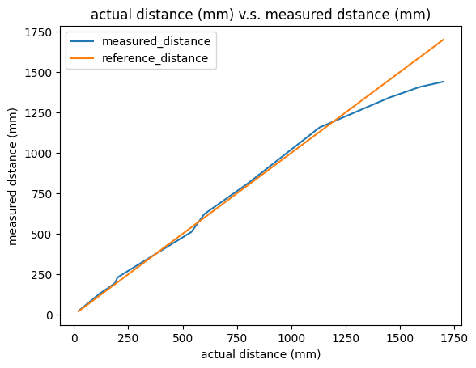
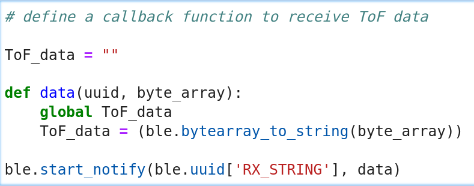
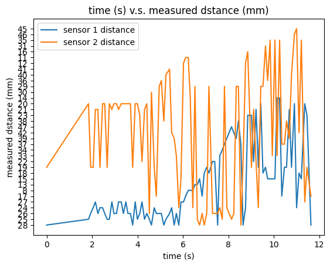
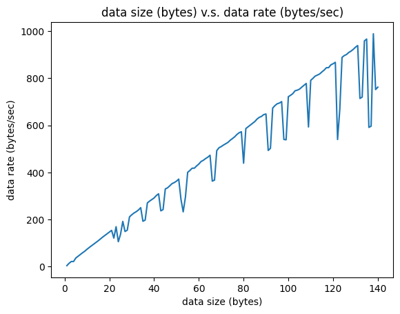

The purpose of this lab is to equip the robot with sensors, at this moment, we are implementing two ToF (Time of Flight) distance sensors to measure the distance between obstacles and the robot.
The two ToF sensors are soldered and connected to the Artemis firstly and tested using example codes from libraries. Based on the example functions provided, the I2C communication protocol and working functions of ToF sesors are studied.
To further investigate the performance of the sensor, some experiments regarding distance range, surface color of obstacle and texture of obstacle are conducted.
Eventually, programs are developed on both Artemis and computer side to get time-stamped data recorded from ToF sensors to be transmitted and display on the computer via Bluetooth.
Prelab
- I2C address & connection of two ToF sensors
According to the datasheet of ToF sensor, its default I2C address is 0x52. However, after connecting one ToF sensor with Artemis through the QWIIC breakout board, and print the device address using example code, the address of QWIIC is 0x69 and the address of ToF sensor is 0x29.
After soldering the cables to the sensors, each of the two ToF sensors is connected with Artemis individually and tests its distance measurement performance using example codes. While since both sensors share the same default I2C address, when connected and work simultaneously, only one of them can communicate with its master device (Artemis) via the default address.
Therefore, to use 2 ToF sensors simultaneously, one of the sensor's I2C address must be modified, so that master board can communicate with two ToF sensors via different addresses. To modify the address, the XSHUT pin of both sensors are connected to pin A0 and A1 on Artemis respectively. Then, the second sensor can be manually disabled by writting a digital LOW to its XSHUT, while the first sensor receives a digital HIGH on its XSHUT pin to remain enabled, so that the address of the first sensor can be mannualy modified using setI2CAddress() function. Finally, we can bring back the first sensor by changing the digital signal to its XSHUT pin to HIGH.
- sensor wiring and placement
Since I only have two ToF sensors, I would like to place one on the front of the robot while the other one on the left side. This means the obstacles from backward and right side can be missed. The wiring diagram is sketched as below.

Lab Tasks
Task 1: Sensor soldering & connection
The single sensor connection with Artemis is shown as picture below, following with a screenshot of Artemis scanning for I2C device address. It is shown that two adresses are detected, 0x69 for QWIIC board and 0x29 is for ToF sensor.

It needs to be noticed that the default address for ToF sensor is 0x52 which is 1010010 in binary, while it becomes 0x29 which is 101001 as printed. It seems Artemis shifts the LSB bit of the default address and allocate it as 0x29 for ToF sensor.
Task 2: Sensor measurement test
According to the manual of ToF sensor, there are three distance modes, while only two of them: Short / Long distance mode are applicable in Arduino ide becase of the library implemented. Since the short distance mode has better ambient immunity and its maximum working distance is up to 1.3 meters which is quite enough to detect obstacles around the robot, it is chosen to be the work mode in future labs.
| Possible distance modes | Maximum distance | Benefit/comments |
|---|---|---|
| Short (default) | Up to 1.3 m | Better ambient immunity |
| Long | Up to 4 m | Maximum distance |
The picture below shows the distance measurement tool to measure the actual distance as reference to compare the performance of the ToF sensor. A simple program is developed to record readings from a ToF sensor for 100 times and compute the average measurement as the final distance, as the video demonstrates.

The figures for both actual distance and measured distance are recorded as distance varies. A visualization of the measurement performance goes as the actual distance increases is shown below.
I measured and recorded 12 different distances for this plot. As the figure shows, the measured distance basically overlaps with the reference line for shorter distances. While as actual distance becomes longer up to 1250 mm, the performance starts to be disappointing, and becomes even worse after actual distance reaches over 1500 mm. This result basically matches the statement from datasheet that the working range for short distance mode is up to 1.3m.
Generally, the short distance mode gives a satisfying performance within distance below 1250 mm which is quite acceptable for this lab.
Task 3: 2 ToF sensors & sensor speed
To connect two ToF sensors and get them work simultaneously, apart from modifying I2C address for one of them, the example code ReadDistance is further extended to support measuring and printing out distances from both ToF sensors.
As the code snippet shows, a while loop is applied to ensure only if both sensors get ready to send data, the distances are recorded, otherwise the loop will delay the system.
According to the datasheet(link), sampling frequency of ToF sensor can be up to 50 Hz (20ms interval). Based on SparkFun_VL53L1X_Arduino_Library, the function getIntermeasurementPeriod() can return measurement interval in millisecond. Hence the default sensor speed is shown as below.
As mentioned before, since the presence of while loop that waits until both sensor get ready to send data can slow down the frequency of printing out the measured distances, the interval between two printed readings may not represent the real sampling frequency of the sensor effectively.
Task 4: Data transmission via BLE
The final task is to transmit the sensors' collected data from Artemis to computer side via Bluetooth.
on the Artemis side, a new class ToF_Sensor.h is defined which has two functions: init() to initialize both sensors and change one of its I2C address; measure_dist to conduct distance measurement and store results to a EString: tx_estring_value2. The main body of this class is basically copy of Task 3 codes.
Similar to lab 2, a new command case tof_data is created to call the function sensors.measure_dist() to conduct the distance measurement, send the string sensors.tx_estring_value2 storing measurement to computer side, and print out the measurement on the Serial Monitor.
on the computer side, a callback function is defined to receive the string containing time-stamped readings from both sensors.
 In order to print the time v.s. distance graph, the timestamp, sensor1 reading and sensor2 reading need to be extracted from the ToF_data string respectively. A function is defined loop for 10 seconds and extract time, measured distance from first and second sensors to store them to three lists.
Eventually, according to the data from three lists, the time v.s. distance plot can be sketched as below.
Additional Tasks
- Effective Data Rate and Overhead
To calculate the data rate for 5-byte replies and 120-byte replies respectively, two similar functions to echo 5-byte string and 120-byte string are defined in Artemis and two callback functions are defined in computer side to receive the replies.
For both 5-byte and 120-byte replies, the transmission iterates for 30 times and the average transmission times and average data rates are computed. It needs to be noticed that both start time and end time of the transmission process are stored in lists respectively and transmission time is calculated by doing subtraction between the two lists.
The average transmission time and data rate for 5-byte replies and 120-byte replies are shown in video below.
As the video shows, there are basically no significant difference between transmission time of 5-byte replies and 120-byte replies (only 0.01s), while the data rate increases dramatically.
To further verify this trend, various reply sizes range from 1 byte to 140 byte are tested. As video shows, the experiment process is basically similar to previous tests for 5-byte and 120-byte, and eventually data rate for various data sizes are plotted as below.
The figure shows that despite fluctuations, generally, data rate increases as reply data size increases.
Due to these experiments, it is possible that transmission time is independent from data size, since for low byte replies, the data rate is lower as well, it can be deduced that smaller packets actually introduce more overheads. While for longer reply data size, the data rate is much higher, indicating that larger packets contain less overheads.
- Reliability
To test reliability of the transmission, a new function ‘reliability’ is defined on Artemis to receive ‘interval’ time from computer and hence provides reply to computer after a period of interval time.
A callback function is defined on computer side to receive and store all the replies sent from Artemis, so that to verify the accuracy of the replies.
As the video below shows, as interval time becomes shorter, the replies are sent back to computer at a higher rate from Artemis. Eventually, there all the data sent back are received correctly without missing anything. Therefore, the transmission is 100% reliable.
Texts and Videos by Zhongqi Tao